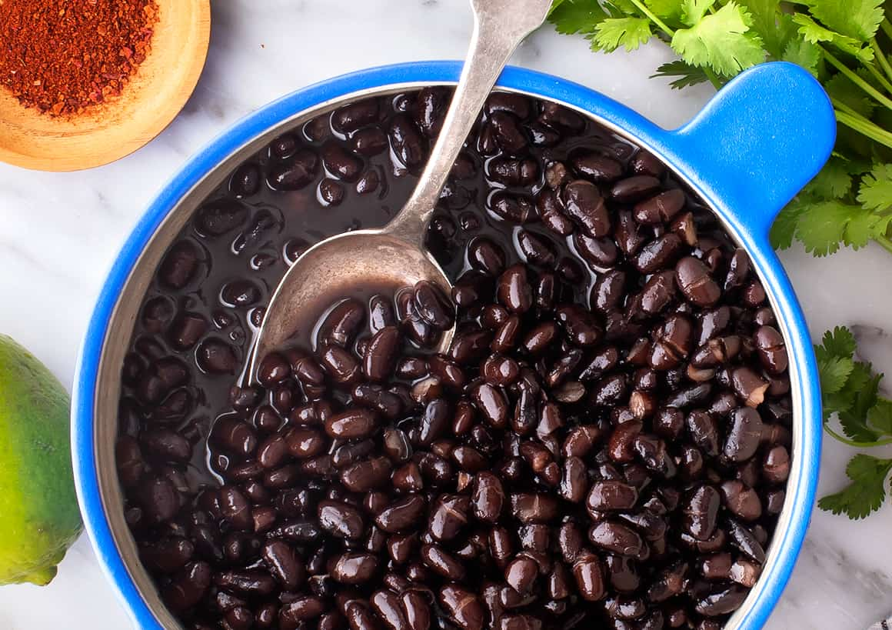

Best Black Beans

Description
This black beans recipe is ready in just 15 minutes!
With a can of black beans, onion, and garlic from your pantry, plus some chopped fresh cilantro,
this quick and easy side dish is a no-brainer when you're short on time. Pairs well with any Mexican or Cuban meal.
Ingredients
- 16 oz black beans
- 1 onion chopped
- 1 clove garlic
- 1/4 teaspoon cayenne pepper
- salt to taste
- 1 tablespoon fresh cilantro
Steps
- Gather all ingredients
- Combine beans, onion, and garlic in a medium saucepan; bring to a boil.
- Reduce heat to medium-low. Stir in cilantro, cayenne, and salt. Simmer for 5 minutes.
- Remove from pot, sprinkle with cilantro, and serve.
Back to Home